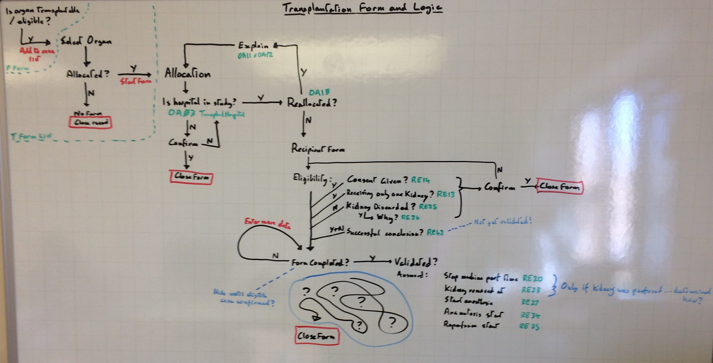

Design - WP4:Compare¶
(notes) Belatedly putting a few things down here for clarity:
Apps¶
Models¶
Forms¶
There are several key “forms” in the system, which are actually composed of a number of smaller forms (and occasionally formsets).
Procurement (Compare app)¶
Procurement hangs off of the Donor model, which means that this model also holds any form specific metadata (such as form_completed).
Each Procurement Form is started via DonorStartForm
OrganPerson is created along with Donor via the DonorStartForm. 2 Organs and a related donor Sample Worksheet are also created.
Extra steps are taken to complete a Randomisation record if the case is started as an Offline randomisation, otherwise they are not added until later on in the Procurement Form process.
Procurement Form structure:
Donor {1} via DonorForm
|-> OrganPerson {1} via OrganPersonForm
|-> Randomisation {0|1}
\-> Organ {0|2} via OrganForm
\-> ProcurementResources {7} via ProcurementResource????InlineFormSet made of ProcurementResourceForm
Transplantation (Compare app)¶
Transplantation hangs off of the Organ model. This is because neither OrganAllocation, nor Recipient records can be guaranteed to exist for this form to be considered “closed”. Consequently we need to record form metadata on the Organ record (rather than Recipient as originally intended).
Each Transplantation Form is started via AllocationStartForm. This will create an initial OrganAllocation record which is what is displayed for the Transplantion form to start with.
Tranplantation Form structure:
Organ {1} via TransplantOrganForm
|-> OrganAllocation(s) {0-n} via AllocationFormset
\-> Recipient {0|1} via RecipientForm
\-> OrganPerson {1} via OrganPersonForm
The overall process can be seen in the following process image:

The basic flow can be seen as: Allocated? --> Allocation(s) --> Recipient Data --> Form Notes. There are several stages where the process terminates with the form being closed, not just after a complete procedure.